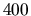
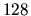
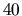

The PdTRAV package is available via anonymous FTP from ... A compressed tar file named pdtrav-2.0.tar.gz can be found in directory pub. Once you have this file,
gzip -dc pdtrav-2.0.tar.gz | tar xvf -will create directory pdtrav-2.0 and its subdirectories. These directories contain the package, including documentation and a few usage examples.
There is a README file with instructions on configuration and installation in pdtrav-2.0. You can use a compiler for either ANSI C or C++. To compile and link the package the user should run the main Makefile in the src directory (generated by autoconf). The user can choose different setting options depending on the hardware/OS on which the installation has to be performed. The Cudd-2.3.0 package is required by pdtrav on a sibling directory of the PdTrav. Information on the Cudd-2.3.0 can be found from http://vlsi.colorado.edu/ fabio.
Once the user has made the libraries and executable program, he can test the program in the exp directory. Such a directory contains a few blif files on which to run PdTRAV (cmd interface), and a few script files showing how to run it. From the root directory type, for example:
cd <root directory>/pdtrav-2.0/exp/trav ../../bin/pdtrav source s1423TravOrdTrMon.cmdThis runs the traversal program on the s1423 circuit and with a variable ordering optimized for the monolithic transition relation representation. On a MHz Pentium II processor with  Mbytes of main memory and running Linux RedHat 5.2 Apollo it takes about  seconds. The output produced by the program can be checked against the contents of the file s1423TravOrdTrMon.out. More information on the pdtrav program can be found in the README file on the root of the distribution. (ImgTime: 0.65 sec)(TotalTime: 3.19 sec) TravLevel 4: [|Tr|: 758881] [|From|: 556][|To|: 1228][|Reached|: 1397][#ReachedStates: 392225] (ImgTime: 1.19 sec)(TotalTime: 4.89 sec) TravLevel 5: [|Tr|: 758881] [|From|: 1275][|To|: 3168][|Reached|: 3316][#ReachedStates: 2.08012e+06] (ImgTime: 2.71 sec)(TotalTime: 8.34 sec) TravLevel 6: [|Tr|: 758881] [|From|: 3152][|To|: 7496][|Reached|: 7763][#ReachedStates: 8.49328e+06]
Another possibility is the src/test directory, which shows some examples of how to use pdtrav as a library. The test executable (testPdtrav) is moved in the bin directory, too.
If you want to be notified of new releases of the PdTRAV package, send a message to the authors cabodi,quer@polito.it. Moreover, send feedback to the same authors.